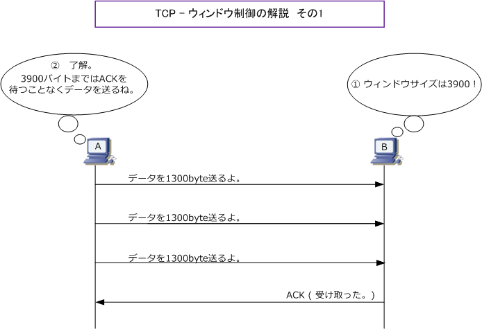
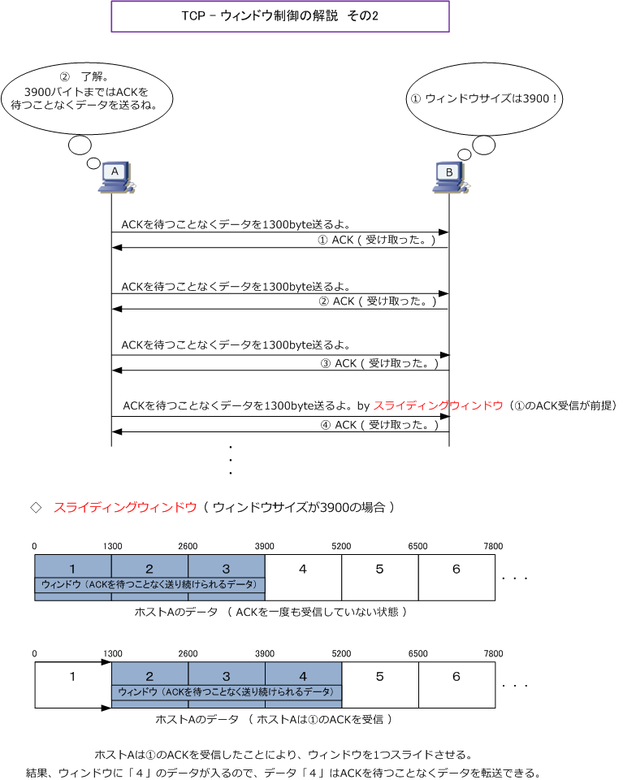
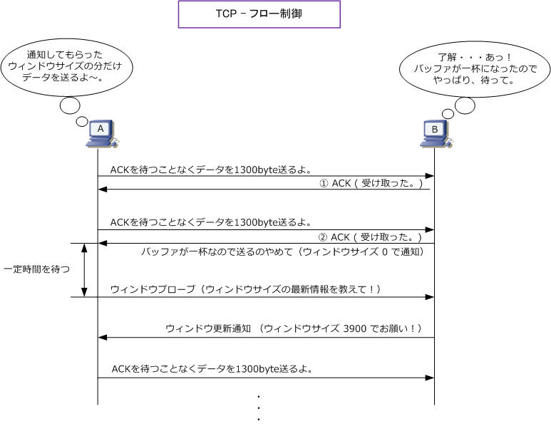

TCP Window Control / Flow Control
TCP - 通信効率の向上 ( ウィンドウ制御 ）
TCPでは、ACKの応答確認により信頼確保されていますが、パケット送信の度にACKを送信していては さすがに通信速度が遅くなってしまいます。そこでTCPヘッダにあるウィンドウサイズを利用することで この問題を解決しています。ウィンドウサイズとはACKを待たずに一度に送信できるデータ量のことです。
例えば3900バイトのデータを3回に分けて送信する時、1300バイトのデータを送るたびにACKを待って いると通信速度は遅いですが、ウィンドウサイズが「3900」であることを相手側のホストに伝えた場合、 送信側はACKを待つことなく3900バイトのデータを送信することができるので、通信速度が速まります。

しかし、これではウィンドウサイズ分のデータを送信した後、ACKを受信するまでの間の待ち時間が発生 してしまいます。ウィンドウ制御では、この待ち時間を解消するためにスライディングウィンドウと呼ば れる技術を使用しています。スライディングウィンドウでは、受信側（ホストB）はデータを受信する度に ACKを送ります。最初のACKを受信したらその分のウィンドウをスライドさせるので送信側（ホストA）は そのACKを待つことなくウィンドウサイズ分（3900バイト）のデータを下図の図解通り送り続けられます。

TCP - 通信効率の向上 ( フロー制御 )
ウィンドウサイズの値は、3ウェイハンドシェイクの際にお互いに伝えられます。送信側ホストは受信側の ウィンドウサイズが分かれば、そのサイズになるまでACKを待つことなく送信することができます。そして スライディングウィンドウにより実際には連続的にデータを送り続けられます。これがウィンドウ制御です。
しかし、多数の送信側ホストが同時にデータを送信して負荷が高まると、受信側はデータを処理しきれない 場合が発生します。このような場合、受信側はウィンドウサイズを小さくしその値を送り直します。そして 受信可能な状態になればウィンドウサイズを大きくして通知します。この処理の事をフロー制御と言います。

← TCP - 順序制御、再送制御 UDPとは →